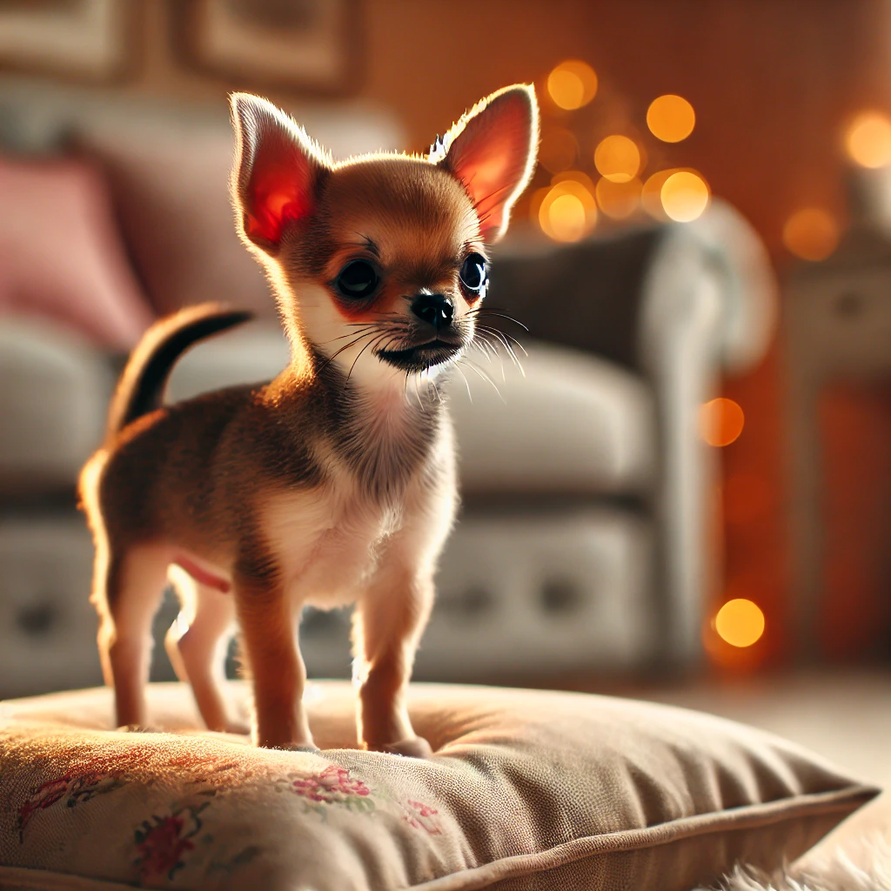
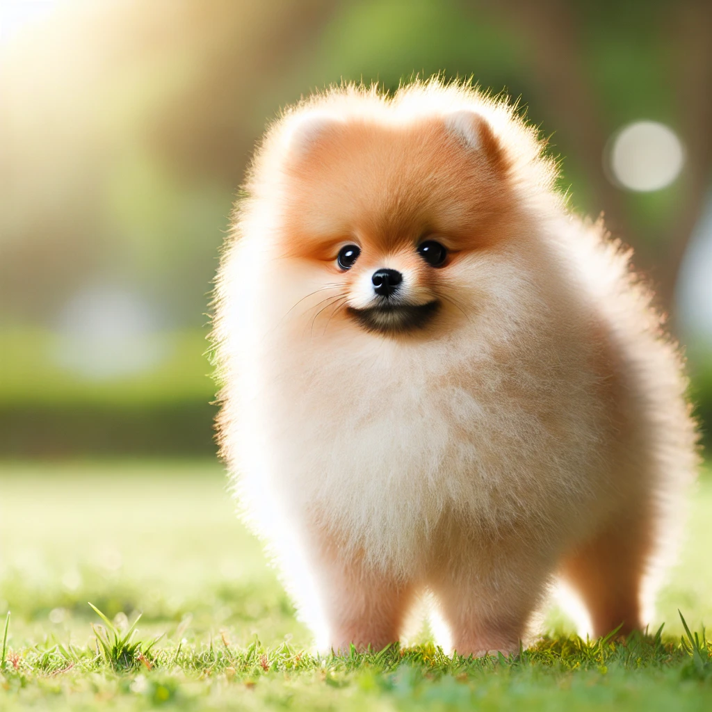
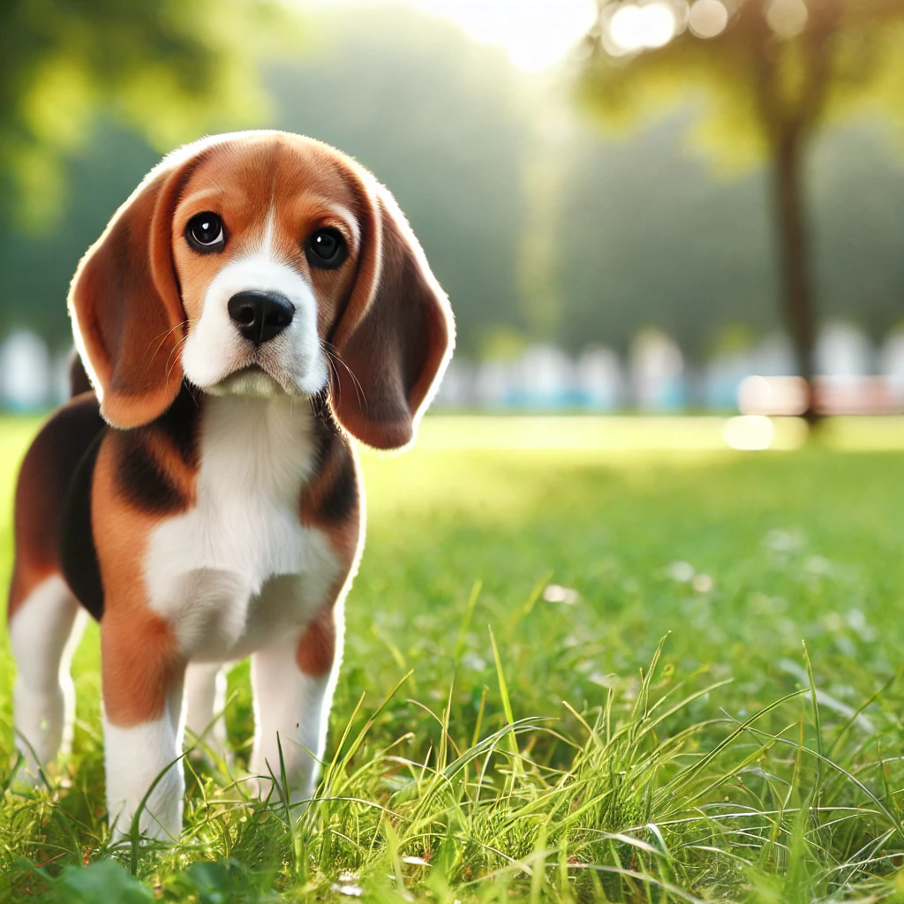
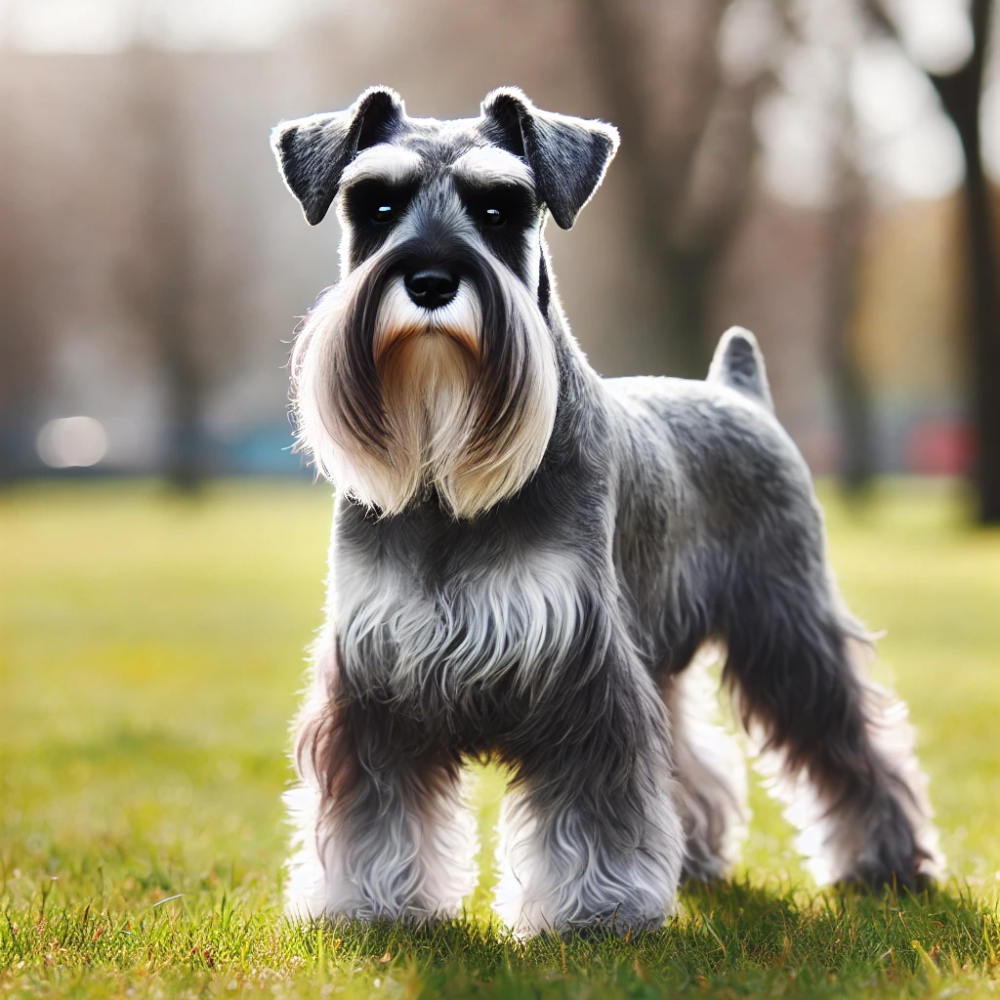

Adopta un Perro
¡Ayúdanos a darle una segunda oportunidad a nuestros amigos de cuatro patas!
Razas Pequeñas
Las razas pequeñas son ideales para espacios reducidos. Son juguetonas, cariñosas y fáciles de cuidar.
Cuidados: Necesitan paseos cortos, alimentación balanceada y visitas regulares al veterinario.
-

Chihuahua - 2 años
El Chihuahua es una raza pequeña pero llena de energía. Es cariñoso y protector con su familia.
-

Pomerania - 1 año
El Pomerania es una raza pequeña y juguetona. Es ideal para personas que viven en apartamentos.
-
 Yorkshire Terrier - 3 años
Yorkshire Terrier - 3 años
El Yorkshire Terrier es una raza pequeña pero valiente. Es muy leal y cariñoso con su familia.
Razas Medianas
Las razas medianas son equilibradas, activas y perfectas para familias.
Cuidados: Necesitan ejercicio moderado, alimentación adecuada y socialización.
-

Beagle - 2 años
El Beagle es una raza mediana muy amigable y sociable. Es ideal para familias con niños.
-
 Bulldog Francés - 1 año
Bulldog Francés - 1 año
El Bulldog Francés es una raza mediana muy tranquila y cariñosa. Es perfecto para personas que buscan un compañero relajado.
-

Schnauzer Mediano - 3 años
El Schnauzer Mediano es una raza inteligente y activa. Es ideal para personas que disfrutan de actividades al aire libre.
Razas Grandes
Las razas grandes son protectoras, leales y necesitan espacio para moverse.
Cuidados: Requieren ejercicio intenso, alimentación de alta calidad y entrenamiento.
-
 Pastor Alemán - 2 años
Pastor Alemán - 2 años
El Pastor Alemán es una raza grande muy inteligente y leal. Es ideal para familias activas.
-
 Labrador Retriever - 1 año
Labrador Retriever - 1 año
El Labrador Retriever es una raza grande muy amigable y juguetona. Es perfecto para familias con niños.
-
 Golden Retriever - 3 años
Golden Retriever - 3 años
El Golden Retriever es una raza grande muy cariñosa y sociable. Es ideal para personas que buscan un compañero leal.